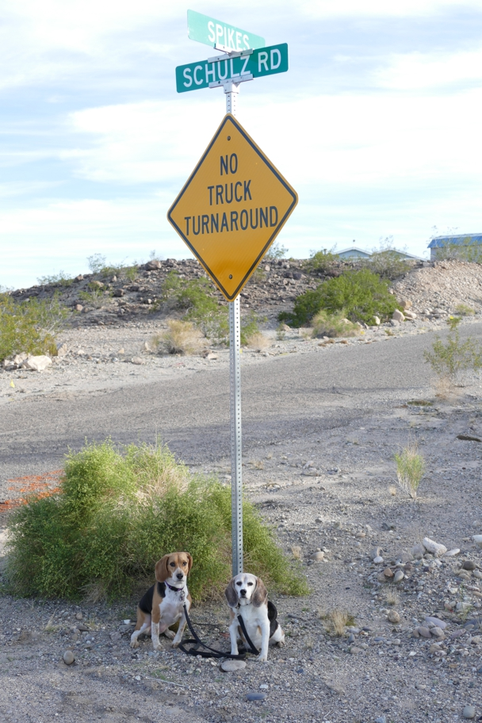

<--Previous Up Next-->

The theme continued just up Spike's Road. Schulz's family lived here when he was young,though I don't think this road existed then.
California Halley Beagle Needles Wallace Beagle